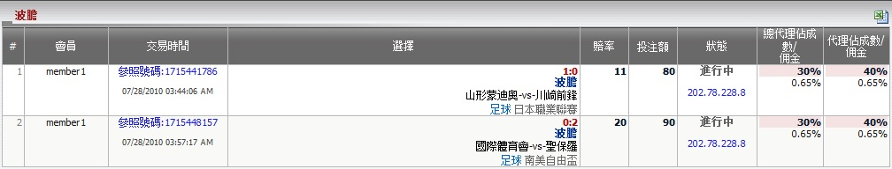

波膽
定義:
顯示總代理基於注單佔成數的輸贏數額, 投注類型之: 波膽。 這份報告分開每場交易，並包含交易的所有詳細資料。

圖 1.1
- 從上圖中, 我們能夠知道從屬該總代理的所有會員的注單詳情, 如下:
- 第一投注: 會員賬號 "member1", 參照號碼: 1715441786, 交易日期: 07/28/2010, 投注類型: 波膽, 比分: 1-0, 賽事: 山形蒙迪奥 -vs- 川崎前锋, 聯賽: 日本職業聯賽, 賠率 = 11, 投注額 = 80, 總代理佔成 = 30%, 總代理佣金 = 0.65%, 代理佔成 = 40%, 代理佣金 = 0.65%。
- 第二投注: 會員賬號 "member1", 參照號碼: 1715448157, 交易日期: 07/28/2010, 投注類型: 波膽, 比分: 0-2, 賽事: 国际体育会 -vs- 圣保罗, 聯賽: 南美自由杯, 賠率 = 20, 投注額 = 90, 總代理佔成 = 30%, 總代理佣金 = 0.65%, 代理佔成 = 40%, 代理佣金 = 0.65%。